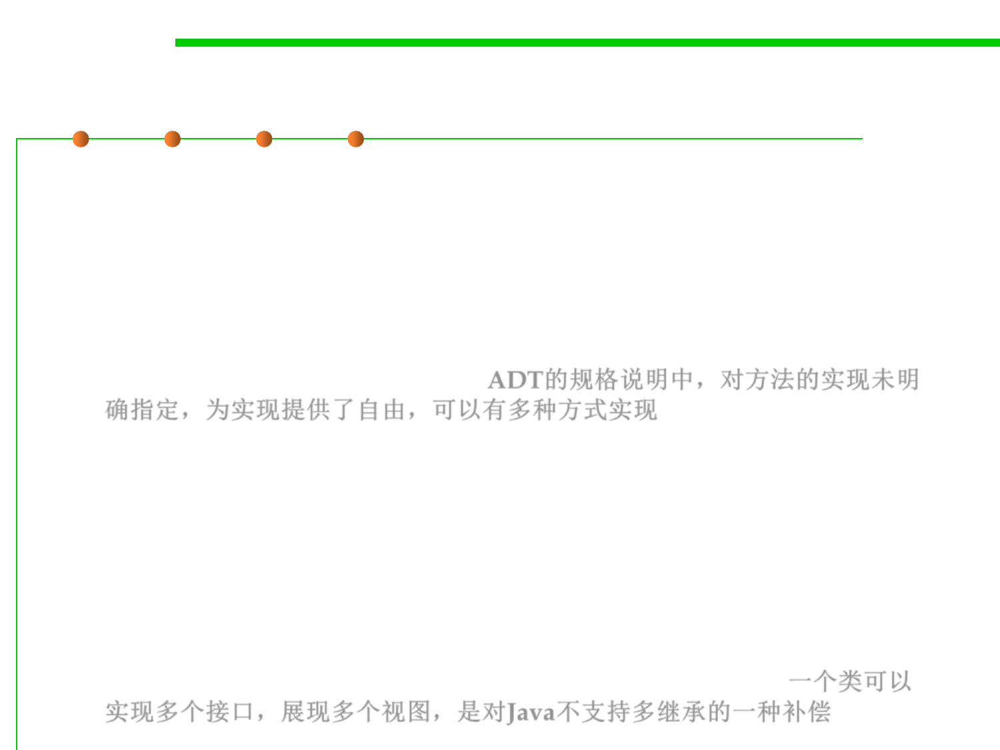

Summary of Interface
3.4 Object-Oriented Programming (OOP)
▪ Methods with intentionally underdetermined specifications
– An ADT for finite sets could leave unspecified the element order one gets
when converting to a list. Some implementations might use slower
method implementations that manage to keep the set representation in
some sorted order, allowing quick conversion to a sorted list. Other
implementations might make many methods faster by not bothering to
support conversion to sorted lists. ADT的规格说明中，对方法的实现未明
确指定，为实现提供了自由，可以有多种方式实现
▪ Multiple views of one class
– A Java class may implement multiple interfaces. For instance, a user
interface widget displaying a drop-down list is natural to view as both a
widget and a list. The class for this widget could implement both
interfaces. In other words, we don’t implement an ADT multiple times just
because we are choosing different data structures; we may make multiple
implementations because many different sorts of objects may also be seen
as special cases of the ADT, among other useful perspectives. 一个类可以
实现多个接口，展现多个视图，是对Java不支持多继承的一种补偿